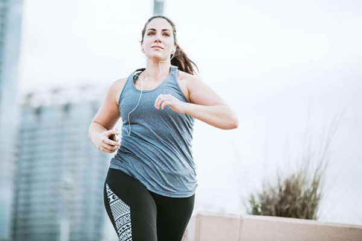

1.Chạy đốt mỡ
Chạy đốt cháy mỡ thừa là dạng bài tập giúp mỡ thừa trong cơ thể chuyển được hóa thành năng lượng khi nhịp tim đạt ở mức tối đa. Nhịp tim bình thường của con người chúng ta thường dao động khoảng 60-80 nhịp/phút. Nhưng khi chạy bộ hay tập luyện thể thao tim sẽ đập nhanh hơn để cung cấp oxy cho các bắp cơ. Để giảm cân hiệu quả bằng chạy bộ bạn cần chạy bộ để nhịp tim tối đa đạt mức 114-130 nhịp/phút. Để đốt cháy calo tốt hơn, Elipsport khuyên bạn nên tập luyện trên máy chạy bộ Elip để tăng cường hiệu quả.
Bên cạnh đó, các huấn luyện viên thể dục cũng khuyên bạn không nên nghĩ rằng chạy với tốc độ nhanh để nhịp tim tăng cao hơn nhằm đốt cháy mỡ thừa nhanh hơn. Trên thực tế, để giảm cân hiệu quả bạn không cần phải chạy với tốc độ quá nhanh mà chỉ cần duy trì tốc độ chạy sao cho nhịp tim luôn đạt khoảng 90 nhịp/phút là được. Để giảm cân nhanh chóng thì lượng calo được đốt cháy khi chạy bộ phải là lượng calo đến từ chất béo. Nếu nhịp tim của bạn vượt qua mức trên sẽ khiến cho các hormone đốt cháy chất béo trong cơ thể ngưng hoạt động và hệ hô hấp sẽ đảm nhiệm nhiệm vụ duy trì nhịp độ chạy của bạn.
Để xác định nhịp tim chuẩn nhất thì bạn có thể luyện tập trên máy chạy bộ có chức năng đo nhịp tim hoặc sử dụng các thiết bị đo nhịp tim nếu như chạy bộ ngoài trời. Ngoài ra bảng điều khiển trên máy chạy bộ còn thể hiện thông số về lượng calo đã tiêu hao, giúp bạn kiểm soát được số kg mình muốn loại bỏ chính xác hơn.
2.Chạy nước rút
Chạy nước rút là một trong những bài tập được đánh giá là mang lại hiệu quả giảm cân nhanh chóng. Bởi vì nó không chỉ đốt cháy mỡ thừa trong lúc tập mà còn giúp bạn đốt cháy mỡ thừa liên tục sau khi ngừng tập luyện. Theo một nghiên cứu của các chuyên gia cho thấy, cơ chế trao đổi chất béo trong cơ thể hiệu quả nhất khi chạy với cường độ mạnh ở mức tương đương với chạy khoảng 400m trong vòng 1 phút. Vì khi bạn chạy với tốc độ nhanh quá trình oxi hóa chất béo sẽ diễn ra nhanh hơn làm tiêu hao khoảng 5 calo/phút.
Với bài tập chạy nước rút thì bạn có thể thực hiện các hiệp trên một đoạn đường dốc hay tập với máy chạy bộ (được điều chỉnh độ dốc phù hợp). Chạy 10 phút ở tốc độ nhẹ nhàng để khởi động làm nóng cơ thể. Sau đó, chạy nước rút dốc lên hết toàn bộ sức lực trong 30 giây và phục hồi từ từ bằng cách chạy nhẹ xuống dốc hay giảm độ dốc trên máy xuống mức 0% trong khoảng 2 phút. Thực hiện chạy nước rút theo số lần phù hợp với cơ thể và đúng quy định. Kết thúc buổi tập bằng cách chạy nhẹ nhàng trong 10 phút.
3.Chạy sức mạnh
Bên cạnh chạy bộ, trong lịch chạy bộ giảm cân trong 1 tuần của mình thì bạn nên kết hợp thêm các bài tập sức mạnh để cơ thể vừa giảm mỡ thừa và vừa tăng cường cơ bắp giúp bạn có được thân hình thon gọn, săn chắc. Tập luyện sức mạnh có thể được thực hiện tại nhà hoặc ở phòng gym với các bài tập cơ bản như Squats, Planks, Lunges, Deadlifts hay hít đất…